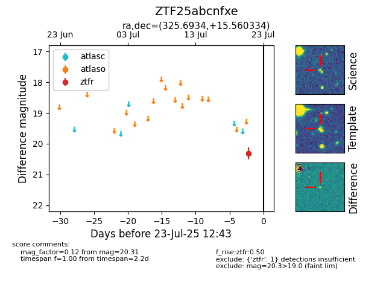

Target ZTF25abcnfxe at 2025-08-06 17:45, see:
FINK: fink-portal.org/ZTF25abcnfxe
Lasair: lasair-ztf.lsst.ac.uk/objects/ZTF25abcnfxe
ALeRCE: alerce.online/object/ZTF25abcnfxe
alt names
ZTF25abcnfxe (ztf,fink)
coordinates:
equatorial (ra, dec) = (325.6934,+15.56033)
galactic (l, b) = (70.1919,-27.42487)
photometry
last ztfr=20.36
4 ztfr detections
